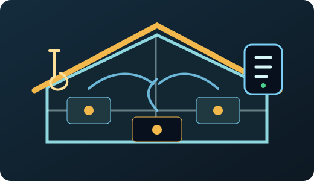
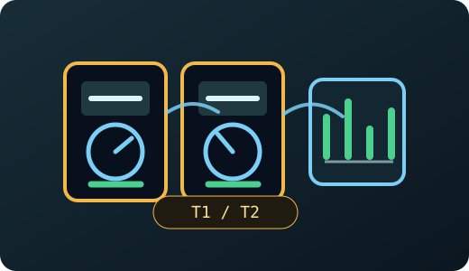
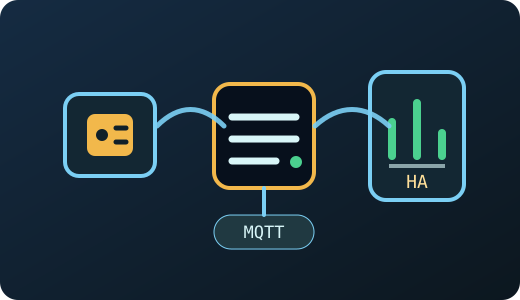
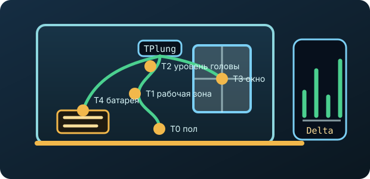
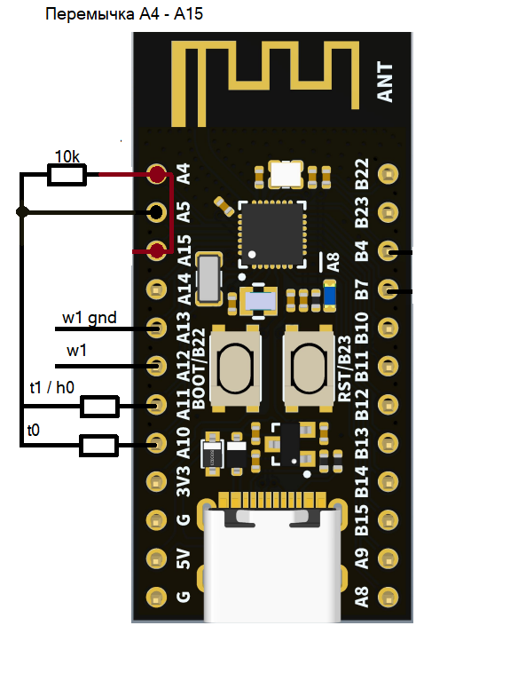

Теплица, погреб, котельная
Контроль температуры и влажности в местах, где нужен простой автономный датчик с BLE-передачей и быстрым USB просмотром.
HR202
DS18x20
пороги Live
Sensor Gateway на CH592 BLE USB stick
TPlung собирает температуру, влажность и показания счетчиков, публикует данные в BLE advertising и дает быстрый USB-доступ для диагностики через браузер.
Где применять
TPlung удобно ставить там, где датчики должны жить рядом с объектом, а данные нужно получать без отдельного дисплея: через BLE, USB Live, роутер или Home Assistant.
Контроль температуры и влажности в местах, где нужен простой автономный датчик с BLE-передачей и быстрым USB просмотром.

Несколько каналов температуры для комнат, улицы, отопления и технических зон с локальными именами устройств и каналов.

Съем T1/T2 с двух счетчиков Энергомера CE308, передача показаний в BLE advertising, MQTT и ежедневные отчеты.

USB-донгл принимает BLE payload, роутер или мини-сервер публикует данные в MQTT и передает их в Home Assistant.

Для эстетов теплового комфорта
Один 1-Wire шлейф с 4-5 DS18x20 превращает TPlung в диагностический профиль комнаты: видно холодный пол, перегрев под потолком, продувание окна и работу батареи отопления по разнице между точками. Для тех, кому "в комнате 23 C" уже недостаточно.
Что умеет TPlung
Поддержка до восьми 1-Wire датчиков ds18s20 (паразитное питание), автозамер по периоду, публикация выбранных каналов и сохранение привязки адресов.
HR202 снимает влажность, термистор дает температурный канал, а пороги с задержками позволяют формировать сигнальные состояния.
Съем показаний с двух счетчиков Энергомера CE308: тарифные зоны T1/T2 передаются в advertising для мгновенного доступа из Home Assistant, а в USB-сценарии результаты чтения отдаются строкой JSON.
Два рабочих формата: Kompius и Home Assistant v2, настройка интервалов AdvMin/AdvMax и мощности TX.
USB в режиме CH340 передает сырые BLE пакеты TPlung и принимает команды сканирования для Web Serial панели.
Автоизмерения, time limited режимы, long sleep профили и отключение USB-линий при отсутствии хоста рассчитаны на питание от USB или батарейки до нескольких лет (Li-SOCl2 FANSO 14505 3.6V).
Подключение и настройка
На этой странице собрана базовая схема подключения 1-Wire, HR202 и термисторного канала, а также сценарий настройки TPlung через USB без дополнительного программатора.

Линия W1 подключается к входу w1, общий провод - к w1 gnd. Для 1-Wire предусмотрен подтягивающий резистор 10k.
Каналы h0/t1 и t0 используются для влажности HR202 и температурного термисторного входа.
A4 соединяется с A15, а резистор 10k ставится между линией A4/A15 и A5 (GND).
Настройки firmware либо через BLE-характеристику, либо через USB.
Поток данных
TPlung упаковывает значения в BLE payload: RSSI, батарея, время пакета, температура, влажность и показания счетчиков Энергомера CE308 доступны внешним коллекторам и браузерному Live-экрану.
DS18x20, HR202/термистор и Энергомера CE308 обновляют внутренние структуры данных.
Флаги присутствия позволяют передавать только активные каналы и укладываться в BLE advertising.
Kompius и Home Assistant v2 форматы отдают данные в advert/scan response, USB канал помогает видеть то же самое live.
Сценарий для роутеров
TPlung можно использовать как донгл для Wi-Fi роутеров Keenetic: роутер получает поток телеметрии, публикует значения в MQTT брокер и отправляет ежедневные отчеты на e-mail.
На стороне Keenetic запускаются скрипты отчетности по расписанию (cron): формируются сводки и графики, которые отправляются на заданный e-mail адрес один раз в сутки.
Данные TPlung прокидываются в MQTT топики роутера и доступны локальному/внешнему брокеру для Home Assistant, Node-RED и других систем автоматизации.
Локальный архив измерений на USB-накопителе, автоматический старт после перезагрузки роутера и удаленная настройка параметров через MQTT топики supervise или через файлы конфигурации на разделенном ресурсе SMB.
Интеграции
Собственный manufacturer payload с RTC, блоками HR202, DS18x20 и отдельным scan response для Энергомера CE308.
BLE service data UUID 0x181A с temperature, humidity, voltage, battery и energy значениями.
Отдельная Web Serial страница управляет TPlung через AT-команды (atXXXX) и показывает найденные устройства карточками.
Отдельная страница для настройки firmware через USB, карта групп настроек.
Мобильное приложение TPlung доступно в RuStore: страница приложения.